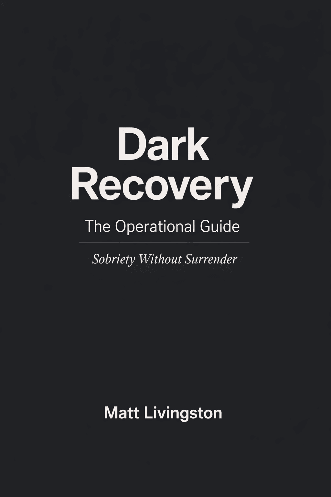

Sobriety Without Surrender
A systems-based approach for people who don't fit the standard models.
Most recovery frameworks require submission—to a higher power, to a group, to a program. For some people, that works. For others, surrender feels like self-erasure.
Dark Recovery is for the second group.
Dark Recovery treats sobriety as an engineering problem, not a moral one.
It works by dismantling the identity alcohol served and rebuilding the systems that made it necessary.
Just structure, honesty, and time.
The full philosophy—what Dark Recovery is, who it's for, what it refuses to do, and how it fails. Free. No email required.
Dark Recovery is a systems-based approach to sobriety that treats drinking as an identity-supported behavior, not a moral failure, spiritual deficit, or personal weakness.
It is not a program, not a belief system, and not a replacement for existing recovery models. It is a documented experiment—one viable architecture among many—for people whose thinking style did not interface well with the standard options.
If something else works for you, keep it.
Dark Recovery is not an upgrade path. It is a compatibility alternative.
This framework emerged from lived experience—from someone who needed a different architecture to make sobriety stick. It is offered not as prescription, but as documentation.
"Dark" does not mean edgy, pessimistic, antisocial, or nihilistic.
It means this: Dark Recovery works directly with the parts of yourself that benefited from drinking—without redeeming them, suppressing them, or pretending they didn't exist.
Alcohol is not framed as an external invader. It is treated as a solution that worked—until it didn't.
The "dark" work is unsentimental inspection: No confession. No absolution. No identity theater. No redemption arc required.
This is not shadow embrace. It is shadow audit.
Sobriety fails most often when it is framed as moral reform ("be better"), spiritual rebirth ("surrender"), or pure restraint ("just don't drink").
Dark Recovery operates on a different assumption:
Drinking persists because it is embedded in identity and reinforced by systems.
Remove alcohol without addressing those layers, and the system searches for replacement pressure—or collapses.
Therefore:
Sobriety is not abstinence. Sobriety is identity decommissioning plus systems replacement.
Alcohol was not just a substance. It was a role amplifier.
For many people, it supported: pride, endurance, edge, chaos tolerance, social dominance, transgression, self-erasure dressed as freedom.
Dark Recovery does not demand the abandonment of identity. It demands the removal of alcohol as a false carrier of values.
You don't lose who you are. You strip alcohol out of the equation and keep what's actually yours.
The goal is not to fight the old identity. The goal is to render it obsolete.
Suppression creates war. Obsolescence creates quiet.
Once identity is decommissioned, systems must replace what alcohol was doing functionally.
Dark Recovery treats life like an operating environment: inputs, defaults, constraints, failure modes, degraded operation.
This approach deliberately avoids motivation, inspiration, and "wanting it badly enough."
Instead, it asks: What pressures existed? What friction was missing? What defaults allowed drift? What roles did alcohol silently perform?
Systems are redesigned so that alcohol is no longer required for the system to function.
Not forbidden. Not resisted. Not dramatized. Simply unnecessary.
Systems solve behavioral reliability. They do not metabolize what alcohol was anesthetizing.
Dark Recovery breaks if it pretends architecture alone is enough.
Dark Recovery does not outsource feeling work to spirituality, group catharsis, or narrative healing—but it also doesn't ignore it. It relocates it.
The emotional work happens in forced contact, not expression. Specifically: when alcohol is removed and no replacement is allowed; when systems hold you steady long enough that avoided states surface; when boredom, grief, anger, shame, or restlessness appear without an escape hatch.
Dark Recovery assumes this moment is inevitable—and designs for it.
Systems don't do the feeling work. Systems remove the exits so the feeling work can no longer be skipped.
No journaling mandate. No group processing. No "talk about your feelings." Just sustained exposure under stable conditions.
If someone needs therapy alongside this, that's compatible—but not required for the system to function.
This is a foundational refusal: Dark Recovery is not about becoming a better person.
There is no moral ladder here. No purity test. No improved self-image promised.
The aim is narrower and more practical:
To become a person who no longer needs alcohol to operate.
"Better" is irrelevant. Functional matters.
Dark Recovery does not claim greater courage, deeper honesty, higher intelligence, or more discipline.
It claims difference, not elevation.
Other recovery models optimize for different assumptions, address different failure modes, and serve different psychological architectures.
Dark Recovery exists because model mismatch is real.
Failure to fit is not failure of character.
Dark Recovery does not promote lone-wolf sobriety.
It rejects confessional dependency, not connection.
Instead of sponsors and identity-based community, it emphasizes: externalized constraints, witnesses instead of authorities, shared activity instead of shared identity, structure instead of confession, visibility instead of emotional performance.
Key principle:
Isolation doesn't cause relapse. Unobserved drift does.
The system is designed to reduce drift without requiring belief, submission, or social theater.
Every system has characteristic ways it fails. Dark Recovery is no exception. Naming these explicitly is essential to the framework's integrity.
Primary Failure Mode: Sterile Mastery
Dark Recovery fails when the system becomes flawless, the life becomes orderly, the edges disappear—and the person never actually meets the discomfort alcohol was buffering.
Symptoms: excessive optimization, endless redesigns, pride in resilience, emotional flatness mislabeled as "stability," quiet resentment toward "messy" people or models.
The system works so well that nothing leaks—and therefore nothing gets processed.
This is not relapse-prone in the short term. It's collapse-prone later.
Secondary Failure Mode: Control Substitution
Alcohol is removed, but control, rigidity, self-surveillance, and performance slide in as replacements.
The substance is gone. The compulsion isn't.
Dark Recovery must explicitly warn:
If the system makes you feel superior, invulnerable, or untouchable—it's already failing.
The Countermeasure: Unoptimized Space
Dark Recovery requires deliberate friction, unoptimized space, and periods where nothing is "fixed." Not chaos. Not relapse rehearsal. Just unmanaged experience.
A core principle:
If your life becomes too smooth, something is being avoided.
That sentence alone keeps the philosophy honest.
Dark Recovery fits people who have three specific traits:
1. High Agency, Low Receptivity to Authority
Strong internal locus of control. Allergic to submission-based models. Experience "surrender" as self-erasure, not relief. These people don't resist rules. They resist being ruled.
2. Identity-Forward Drinkers
Drinking was tied to self-image. Pride, edge, intensity, or transgression were involved. Alcohol was a symbol, not just a sedative. If alcohol was only numbing pain, other models may fit better. If alcohol was meaningful, Dark Recovery has leverage.
3. Cognitive Over-Feelers (By Default, Not Denial)
Pattern thinkers. Builders. Systematizers. People who stabilize through structure first, emotion second. Important distinction: This is not emotional repression. It's sequencing. These people feel after safety is restored—not before.
Dark Recovery is a poor fit for people seeking belonging as the primary need, those who need external moral scaffolding to stabilize, people in acute crisis who require containment first, or anyone who wants certainty, identity, or absolution handed to them.
This is not a refuge. It's a workbench.
Dark Recovery does not tell anyone what is right, argue against other recovery paths, require belief, surrender, or confession, promise transformation, enlightenment, or redemption, or demand identity replacement with a new label.
It offers one thing only:
A way to dismantle a working-but-destructive system and replace it without mythologizing the process.
Dark Recovery explicitly acknowledges: Some people need AA. Some people need God. Some people need medication. Some people need clinical treatment. Some people need community-first recovery.
Period.
Dark Recovery does not compete with those paths. It exists alongside them.
If this had to be reduced to its irreducible form:
Dark Recovery treats sobriety as an engineering problem, not a moral one—by dismantling the identity alcohol served and rebuilding the systems that made it necessary.
Dark Recovery succeeds by using systems to remove escape routes, fails when systems become escape routes, and fits people who stabilize through agency and structure before emotion—not the other way around.
If someone reads this and says, "This isn't for me, but I understand why it worked for you," then it's doing exactly what it's meant to do.

If the manifesto resonates, the guide is the map.
Nine chapters covering:
You don't resist rules—you resist being ruled.
Alcohol wasn't just numbing. It meant something.
You stabilize through structure first, emotion second.
If that's not you, no problem. Other models exist for good reasons.